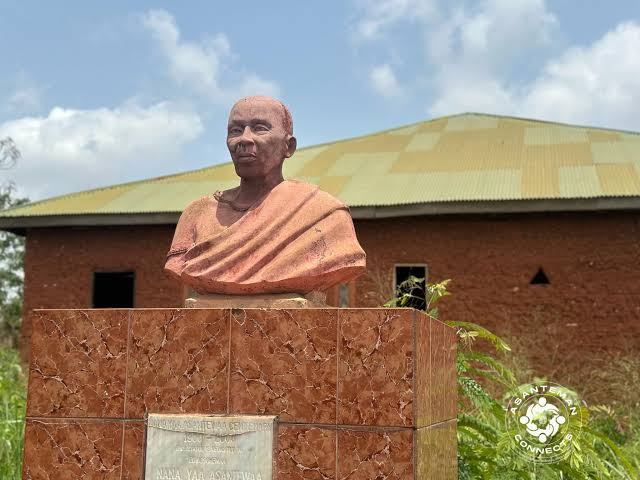

The Yaa Asantewaa War of 1900–1901, known as sa (war) in Akan Twi, was the last of a series of Anglo-Asante conflicts that stretched across the nineteenth century. Known in British colonial accounts as the “Asante Rebellion,” the war represented a determined struggle to defend Asante sovereignty against British imperial conquest. For decades, the Asante had resisted repeated British attempts to undermine their political independence and bring their kingdom under colonial control.
By 1900, the British believed they had consolidated their authority over Asanteman, the Asante nation. In 1896, they had arrested and exiled Asantehene Prempeh I, the King of Asante, along with other prominent leaders, and imposed British authority over Kumasi and surrounding territories. Yet the removal of the Asantehene did not extinguish Asante political institutions, cultural identity, or the determination to resist foreign domination.
At the heart of Asante political and spiritual life stood the Golden Stool, the sacred embodiment of the soul, unity, and sovereignty of the Asante nation. Far more than a royal object, the Golden Stool represented the collective spirit of the Asante people and the legitimacy of their political order. In March 1900, the British governor of the Gold Coast, Sir Frederick Hodgson, traveled to Kumasi and demanded that the Golden Stool be surrendered to British authority. His demand constituted a profound violation of Asante political and spiritual traditions and intensified longstanding resentment against colonial interference.
It was in this charged atmosphere that Yaa Asantewaa, the Queen Mother of Ejisu, emerged as a leading figure in the resistance. Born in Besease, near Ejisu, Yaa Asantewaa was an established political authority whose position as Queen Mother carried significant responsibilities within Asante governance. Queen Mothers were not merely ceremonial figures. They exercised influence in matters of succession, advised rulers, participated in political deliberations, and helped safeguard the institutions and traditions of their communities.
According to Asante oral traditions, Yaa Asantewaa delivered a powerful speech at a meeting of Asante leaders on 28 March 1900, challenging those who hesitated to confront the British. Drawing upon the language of courage, honor, and gendered expectations, she called upon the Asante to defend their sovereignty and the Golden Stool. Her intervention helped galvanize resistance, and she subsequently assumed a leading role in organizing and directing the war against British colonial forces.
The conflict that followed was a formidable challenge to British imperial power. Asante forces besieged the British garrison at Kumasi and mounted sustained resistance that exposed the difficulties of maintaining colonial control over a determined population. British troops faced significant logistical and military challenges, compelling the colonial administration to mobilize reinforcements from elsewhere in West Africa and commit substantial resources to suppress the uprising.
Although British forces ultimately defeated the Asante resistance in 1901, the war demonstrated the enduring strength of Asante political institutions and collective identity. Yaa Asantewaa was captured and exiled to the Seychelles, where Prempeh I and other Asante leaders had also been sent. In 1902, the British formally annexed Asante, incorporating it into their colonial possessions. Yet they never succeeded in seizing the Golden Stool, which remained concealed and protected by the Asante people.
Yaa Asantewaa's leadership was not an isolated departure from Asante political traditions. Rather, it reflected longstanding indigenous institutions in which women exercised significant political authority and played essential roles in governance, succession, and the defense of their communities. As Queen Mother of Ejisu, she drew upon these established traditions to mobilize resistance at a moment of profound political crisis.
The Yaa Asantewaa War stands as a powerful testament to African resistance against imperial conquest and to the central role of women in shaping that history. Although the British achieved military victory, they could neither extinguish Asante nationhood nor destroy the spiritual and political significance of the Golden Stool. Yaa Asantewaa's courage, political leadership, and determination continue to resonate as enduring symbols of African sovereignty, women's authority, and resistance to colonial domination.
Going Deeper: Find these topics in the transcript
The Exile of Asantehene Prempeh I: [Timestamp:] Throughout the nineteenth century, Asante resisted British attempts to undermine its sovereignty. In 1893, Asantehene Prempeh I rejected British demands that Asante become a protectorate. In January 1896, Governor Sir William Maxwell led a British expedition to Kumasi, arrested Prempeh I, his mother, and several prominent leaders, and sent them into exile, first to Elmina, then Sierra Leone, and eventually the Seychelles. Although the British declared Asante a protectorate, resistance to colonial domination continued.
The Golden Stool (Sika Dwa Kofi): [Timestamp:] The Golden Stool, known in Akan Twi as Sika Dwa Kofi, is the most sacred symbol of Asante unity, sovereignty, and spiritual identity. According to Asante oral traditions, it descended from the heavens through the spiritual intervention of Okomfo Anokye during the reign of Osei Tutu. Believed to embody the collective soul of Asanteman, it was never intended to be sat upon, even by the Asantehene. When Governor Frederick Hodgson demanded its surrender in March 1900, he challenged the very foundations of Asante political and spiritual authority.
Yaa Asantewaa as Osahene (War Leader): [Timestamp:] As Queen Mother of Ejisu, Yaa Asantewaa already exercised considerable political authority. Her emergence as osahene, or war leader, represented an additional responsibility. According to Asante historical traditions, she was selected to lead the resistance because of her courage, political judgment, and determination. Her military leadership was an achieved position, rather than one automatically conferred by her office as Queen Mother. She did not merely encourage men to fight but played a central role in organizing resistance against British conquest.
Women's Collective Political Leadership: [Timestamp:] Yaa Asantewaa did not act alone. She collaborated closely with Nana Amma Afranewaa, the Queen Mother of Offinso, an older and experienced political leader. Their collaboration demonstrates that women's political authority in Asante was neither unusual nor confined to exceptional individuals. Rather, it was rooted in established institutions through which women participated in governance, political decision-making, and the defense of their communities.
The Legacy of the Yaa Asantewaa War: [Timestamp:] Although British forces defeated the Asante resistance and exiled Yaa Asantewaa to the Seychelles, they never captured the Golden Stool. Asante political traditions and cultural identity survived colonial conquest. Through oral histories, songs, and collective memory, Yaa Asantewaa remains a powerful symbol of resistance. Her leadership reminds us that African women were not simply participants in history but political authorities and military leaders who helped shape its course.
In the Classroom
Engaging the Episode
• Suggested audience: High school students (grades 9–12), adaptable for introductory college courses
• Lesson Objective: Students will examine the causes and consequences of the Yaa Asantewaa War of 1900-1901, exploring how Asante political institutions, cultural traditions, and the sacred significance of the Golden Stool shaped resistance to British imperial conquest. They will analyze Yaa Asantewaa's leadership within established systems of women's political authority and critically evaluate how colonial and Asante perspectives have shaped historical interpretations of the war.
• Relevant Undergraduate-level Course Themes: Empire, Colonialism, and Resistance; Anti-Colonialism; African Nationalism; Women and Gender; Female Leadership; Sacred Identity and Culture; African Political Systems During Colonialism; African Diaspora; African Experiences of Empire.
• Relevant Undergraduate-level Course Descriptions: World History since 1500; Introduction to African History; Culture and Society of Africa; African Monarchy and European Imperialism; Social Changes and Political Developments in Africa; Sacred Cultural Sovereignty; Cultural Suppression and Economic Exploitation; African History through the Experiences of Women; Political Activism; European Capitalism in Africa
Key concepts
• Asanteman: The Asante nationa, encompassing its people, territories, political institutions, and shared cultural identity.
• Asantehene: The King of Asante, the highest political authority within the Asante kingdom, whose position carries important spiritual and ceremonial responsibilities.
• Queen Mother (Ohemaa): A female political authority within Asante governance who plays an important role in selecting and advising chiefs, overseeing matters of succession, and safeguarding the political and cultural interests of her community. Queen Mothers exercise authority in their own right and are not necessarily the biological mothers or wives of kings.
• Golden Stool (Sika Dwa Kofi): The most sacred symbol of the Asante nation, believed to embody the collective sould, spiritual unity, sovereignty, and identity of the Asante people. Its significance extends beyond kingship to the very existence and continuity of Asanteman.
• Sovereignty: The authority of a people or political community to govern themselves, control their territory, and make decisions without external domination.
• Imperialism: The expansion of a state's political, economic, or military power over other peoples and teritories, often through conquest, coercion, and the imposition of foreign rule.
• Colonial Resistance: The organized efforts of individuals and communities to challenge, oppose, or overturn colonial domination. Resistance may take political, cultural, economic, diplomatic, or military forms.
• Indigenous Political Institutions: Systems of governance, leadership, and political authority developed within societies before colonial intervention. In Asante, these included kingship, Queen Mother institutions, councils, and other established mechanisms of political decision-making and accountability.
Exploring the History
• Listen: Listen to the podcast episode, paying attention to the central events, individuals, and themes.
• Observe: Examine the accompanying images. What do they reveal about the people, places, and events explored in the episode?
• Discuss: Explore the central themes, historical events, and perspectives presented in the episode. What questions or ideas emerge from the discussion?
• Share: Share observations and interpretations. Consider different perspectives and draw on examples from the episode to support your ideas.
• Reflect: How has this episode deepened or challenged your understanding of African history? What questions remain unanswered?
Questions for further exploration
1. How did British efforts to conquer Asante reflect broader patterns of European imperialism in Africa? Why was the Golden Stool so important to the Asante, and what did British attempts to seize it reveal about competing understandings of political authority and sovereignty?
2. How did Yaa Asantewaa's position as Queen Mother of Ejisu shape her leadership during the war? What does her role reveal about women's political authority in precolonial African societies, and how does it challenge assumptions that African political leadership was exclusively male?
3. In what ways did British colonial rule threaten established Asante political institutions, including those through which women exercised authority? How did Yaa Asantewaa draw upon these institutions to mobilize resistance?
4. What does the Yaa Asantewaa War reveal about the relationship between political authority, cultural identity, and collective resistance? How did the defense of the Golden Stool become inseparable from the struggle to preserve Asante sovereignty?
5. Although the British ultimately defeated the Asante militarily, they failed to capture the Golden Stool or extinguish Asante identity. How does this outcome complicate our understanding of conquest, resistance, and the meaning of victory and defeat in colonial African history?
6. Why did British colonial authorities describe the Yaa Asantewaa War as a “rebellion,” while Asante oral traditions remember it as a war of resistance? What does this difference in terminology reveal about the relationship between power, historical memory, and whose perspectives become part of the historical record?
Images

Image 1: Statue of Yaa Asantewaa
Photo of the statue of Yaa Asantewaa outside the Yaa Asantewaa Museum, Ejisu, Ghana. The statue was made to celebrate the Yaa Asantewaa centenary, 1900-2000.
The Kumase Fort, a major colonial military and administrative site in the heart of Kumase, the capital of the Asante Kingdom. The Kumase Fort was originally built in 1820 by the Asantehene, Osei Tutu Kwamina, modeled after the coastal forts established by European merchants. After British forces destroyed it in 1874, the fort was rebuilt in 1897.
Asante King, Otumfuo Agyeman Prempeh I, was exiled first to Sierra Leone and later to the remote Seychelles after the British finally conquered Asante in 1896.
Arhin, Kwame. "The Political Military Roles of Akan Women." In Female and Male in West Africa, edited by C. Oppong. Allen & Unwin, 1983.
Boahen, Albert Adu. "Yaa Asantewaa in the Yaa Asantewaa War of 1900: Military Leader or Symbolic Head?" Ghana Studies 3, no. 1 (200): 111-135. https://doi.org/10.3368/gs.3.1.111.
Brempong, Arhin. "The Role of Nana Yaa Asantewaa in the 1900 Asante War of Resistance." Ghana Studies 3, no. 1 (2000): 97-110. https://doi.org/10.1353/ghs.2000.0004.
Fuller, Frances. A Vanished Dynasty: Ashanti. Frank Cass, 1921.
Tordoff, William. Ashanti Under the Prempehs. Oxford University Press, 1965.